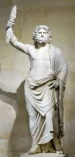

Zeus :: Greek God of the sky and Thunder, King of the Gods
Zeus is the olympian god of the sky and the thunder, the king of all other gods and men,and, consequently, the cheif figure in Greek mythology.
The son of Cronus and Rhea, he is probably most famous for his infidenlity to his sister and wife, Hera.
Athena ,Apollo and Artemis ,Hermes ,Dionysus ,Heracles ,Helen of Troy ,and the Muses are all children of his numerous eotic affairs.
Hephaestus ,Hebe ,and Ares are his legitimate children.
Zeus's Role
Name
Zeus' name is thought to have originated from the Ancient Greek word for "bright".
The word has a close connection with dies, which is the Latin word for "day" and has a very ancient history.
Therefore, many mythologists believe that Zeus is one of the oldest Greek gods.
Other Roles and Epithets
Considered the ruler of heavens and the governor of weather, Zeus was also associated with wisdom and awareness, with authority and destiny, with battles and power.
In fact, Homer says that before the fight between Achilles and Hector, Zeus weighed their lots and blessed the outcome.
Further down, the poet even claims that Zeus owns two urns filled with ills and blessing - the gifts which he gives to every mortal in the amount he decides.
In relation to many other roles Zeus had, he acquired many different epothets. Some of them are: "ooath-keeper", "guest-patron", "all-Greek", and "savior".
Titanomachy: War for Supremacy
Thus, they had no problem in acknowledging his authority.
Led by him - and helped by the one-eyed Cyclopes and the hundred-handed Hecatoncheires (Zeus freed all of them from Cronus' imprisonment) - the siblings overthrew Cronus and the Titans during a decade-long war called the Titanomachy.
Zeus, the Ruler of the Gods
Zeus and his brothers drew lots to share the world between them.
Poseidon got the sea, Hades the underworld, and Zeus the sky.
Finally, Zeus was crowned to be the ruler of all Gods ane Men, referred to universally as father.
Zeus's Women
Zeus's wives
According to hesiod, Zeus had the very same problem with his first wife, Metis.
Warned that their child may be a threat to him, he decided to swallow his pregnant wife.
Nevertheless, the child, fully grown and armored, was eventually born- but from the forehead of Zeus.
It was none other than Athena, the goddess of wisdom herself.
Afterward, Zeus married Themis, who bore him the Horae and the fates.
His third wife was Eurynome, who brought the Charites to the world.
His sister Demeter followed; she gave birth to Persephone.
With his fifth wife, Mnemosyne, Zeus begot the Muses.
After becoming Zeus' sixth wife, Leto became the mother of Apollo and Artemis.
Zeus' seventh and final wife was his sister, Hera.
Knowing her sympathy for animals, he wooed her as a virgin by transforming himself.
Zeus' lovers
However, theirs would prove to be a bittersweet marriage, because Zeus, to say the least, was a promiscuous god.
Bearing the shape of many different animals, he had numerous love affairs with many nymphs and mortals, which made Hera jealous; some say that, when she scolded him for this, disguised as a serpent, he even slept with his mother,Rhea.
Consequently, many gods and heroes are Zeus' children.
It's impossible to list them all.

Zeus' Equivalents
Zeus is called Jupiter in Roman mythology.
Additionally, his powers, symbolism and some of the stories woven around him, are similar to those of some other deities, such as the Norse gods Thor and Odin, the hinduist deity indra, and the Salvic thunder god Perun.
Sources
Zeus is pervasive in ancient literary sources.